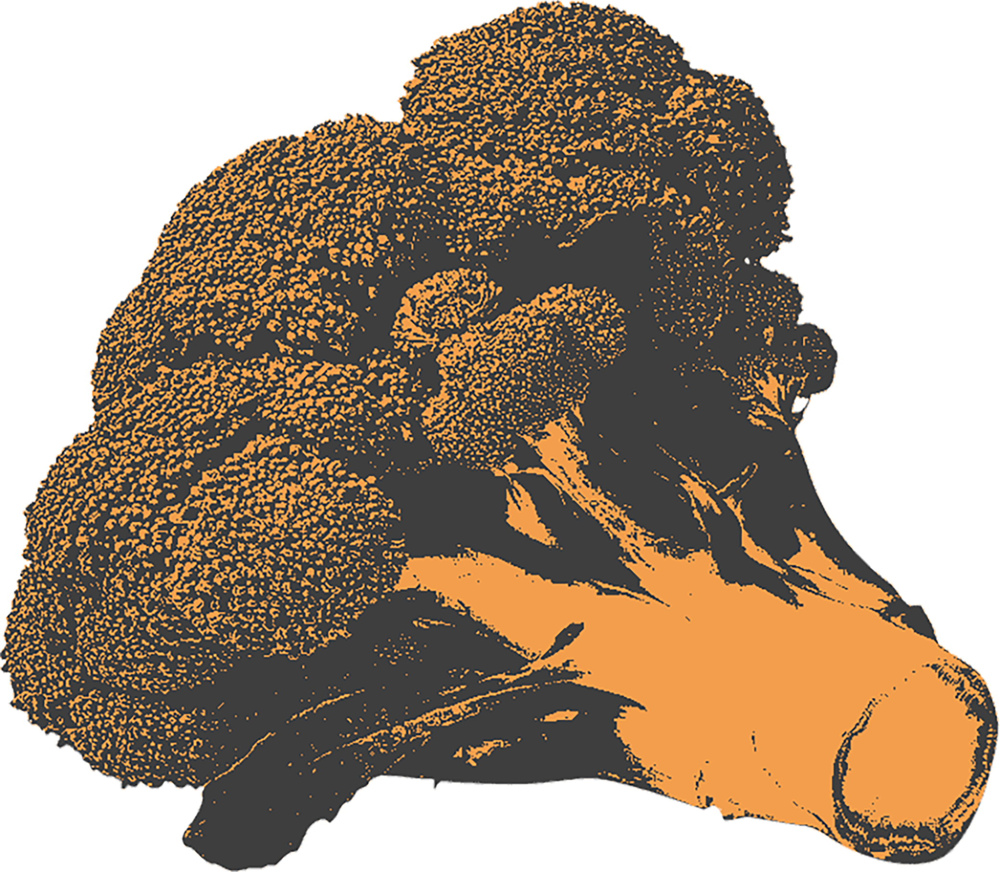
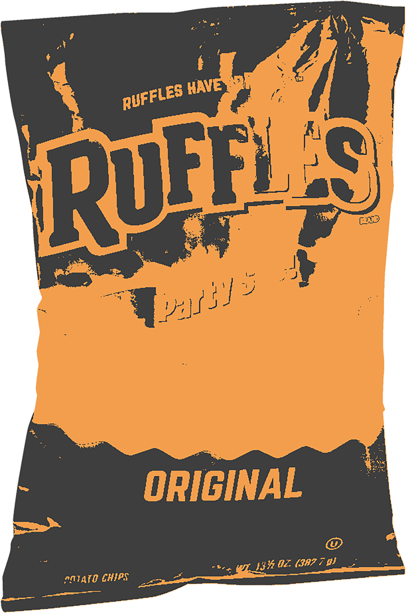
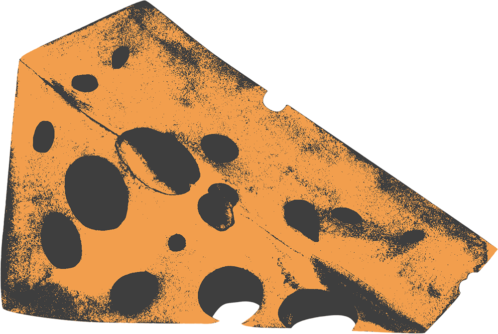
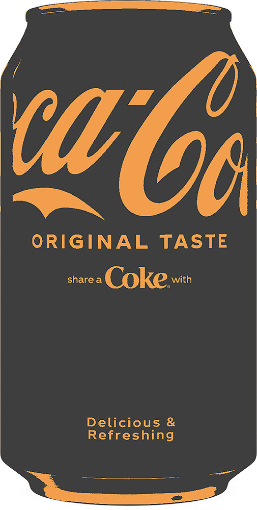
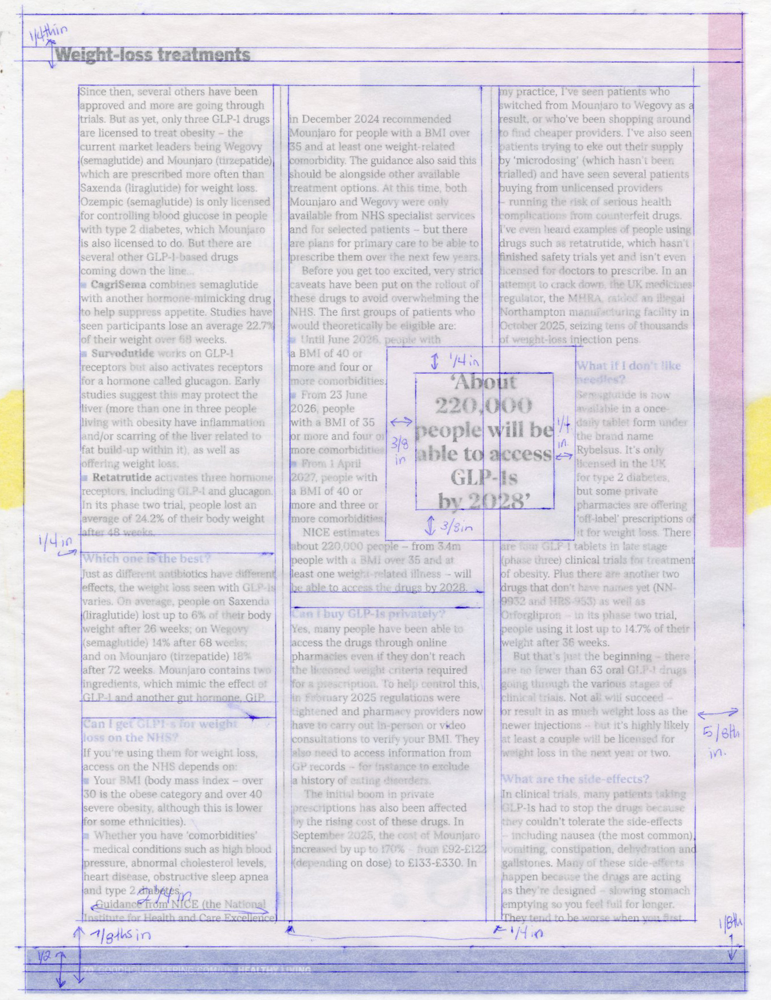
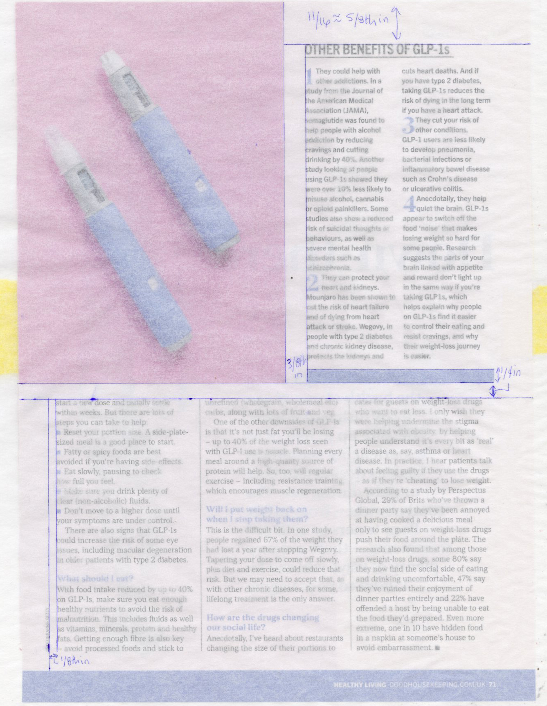
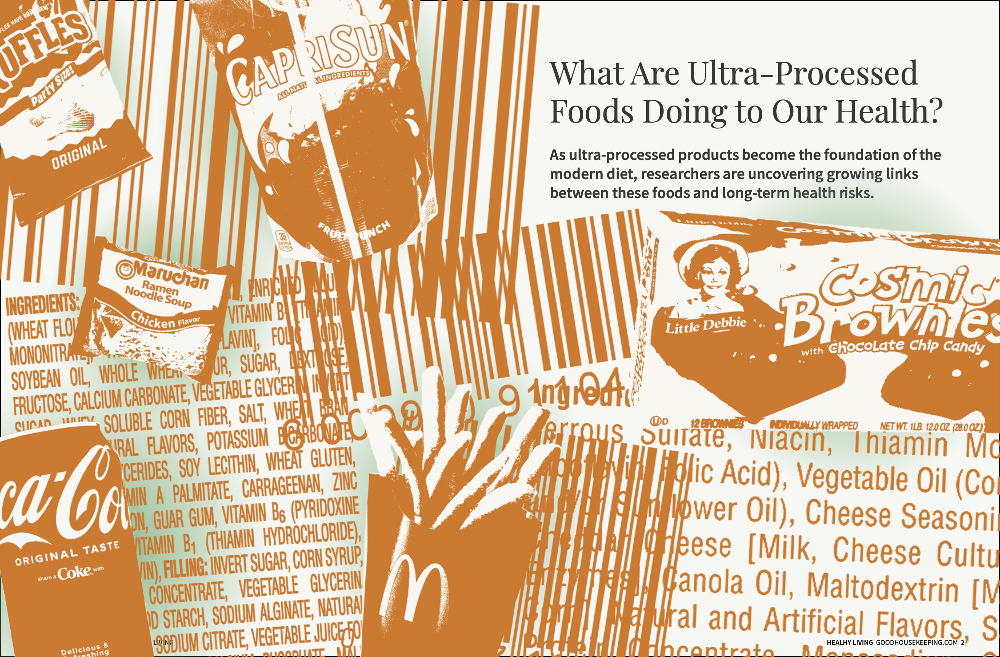
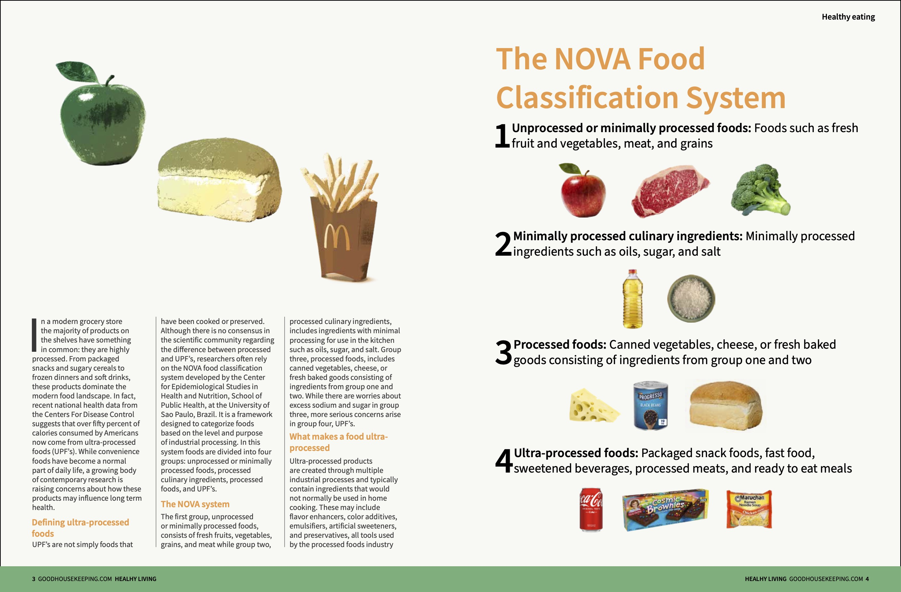
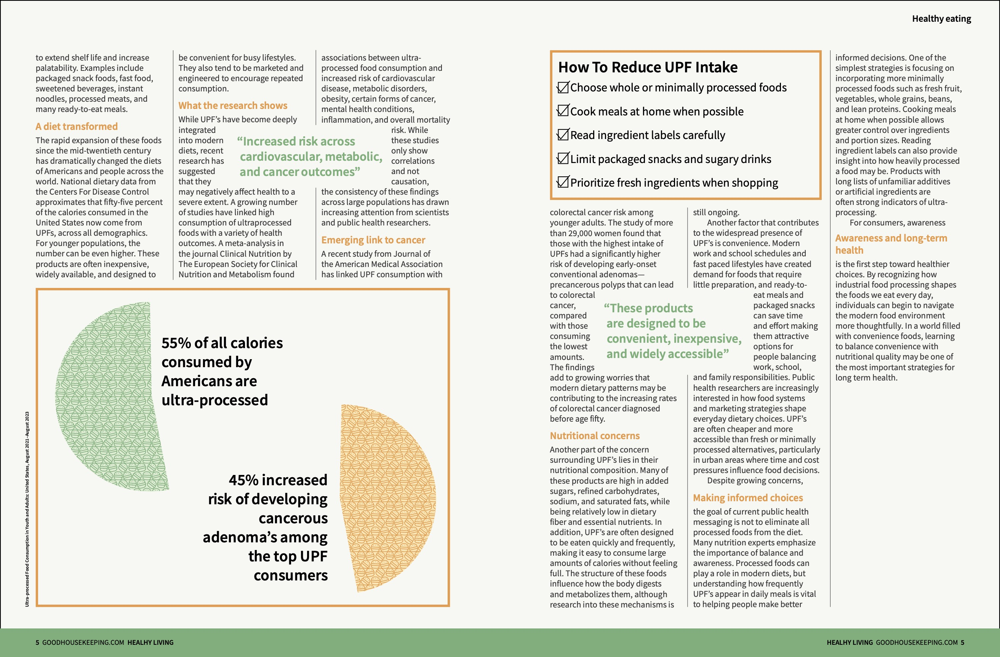

What Are Ultra-Processed Foods Doing to Our Health









In recent decades the modern diet has become increasingly dominated by ultra-processed foods—foods created through multiple industrial processes from ingredients not found in home kitchens. In the United States these products account for half of the total calories consumed by the population. I was driven to create this article by personal experience and an interest in how everyday systems like food production and convenience culture shape health in ways that are often invisible. For readers of Healthy Living magazine, this topic is both relatable and urgent.
Research revealed that ultra-processed foods are widespread, especially among younger populations, and are also consistently associated with a range of adverse health outcomes across several large studies. In response to this alarming data, I aimed to create an article that translates complex nutritional and epidemiological research into a clear editorial format. The article uses familiar imagery in a more provocative format to explain what ultra-processed foods are, contextualize their prevalence, and provide accessible guidance that helps readers make more informed dietary choices.
55%
of all calories consumed by Americans are ultra-processed
45%
increased risk of developing pre-cancerous adenoma's among the top UPF consumers
Initially I had planned for my visual language to distinguish between ultra-processed and fresh food by color. Later in my process I decided the most important part of my visual language was showing these products we are all familiar with and desensitized too in a contemptuous light, This led me to go with a bold duotone palette consisting of orange and dark grey. These colors immediately helped the imagery to come across as a warning instead of attempting to lead readers to decipher my color system.
Orange
#F29E4C
Grey
#333333
White
#F7F7F3
Gradient
#F29E4C to #333333
Headline
Playfair Display Italic
Caption
Source Sans Pro Semibold
Body
Source Sans Pro Light





After the first draft, I unified image treatments to tie the visual language together. I also ensured consistent typography across the article, aligning it with the magazine's style. This process strengthened the overall design cohesion.


On smaller screens, open the PDF full screen for best readability: Open Final PDF
reflection, discuss complexity, What insight did you gain through the project?